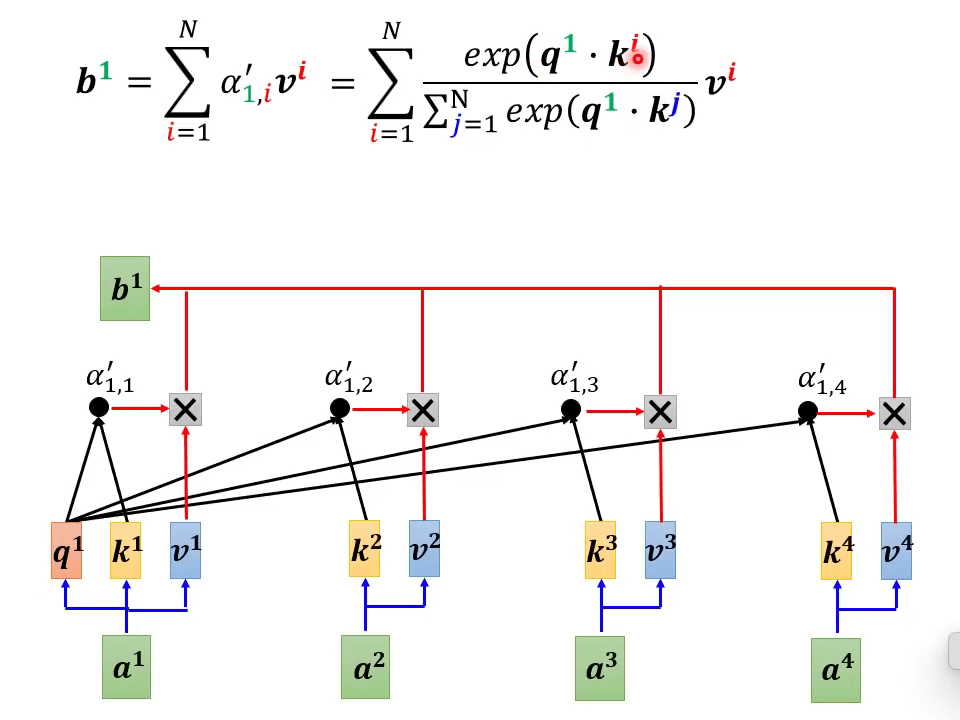
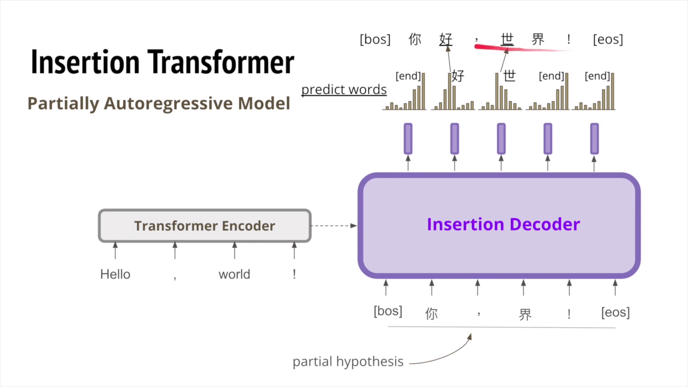

Preparation
【機器學習 2021】Transformer -上-
Transformer 是 2017 年引入的深度学习模型，主要用于自然语言处理领域。与循环神经网络一样，Transformers 旨在处理顺序数据（例如自然语言），以执行翻译和文本摘要等任务。但是，与 RNN 不同，Transformers 不需要按顺序处理顺序数据。
- 【DL】图解 Transformer – 李宏毅 - 知乎 (zhihu.com)
- （2021 李宏毅）机器学习-Transformer_顾道长生’的博客-CSDN 博客
- 李宏毅老师《机器学习》课程笔记-5 Transformer - 知乎 (zhihu.com)
Seq2seq 问题：输入一个序列，输出一个序列，输出序列的长度由模型决定。
- Speech Recognition：输入一段语音 T，输出对应的文字 N。
- Machine Translation：输出一段文字 N，输出另一种语言的文字 N’。
- Speech Translation：输入一段语音（这段语音使用的语言可能没有对应的文字），输出另一种语言的文字。
- 对于有文字的语言，可以将 Speech Recognition 和 Machine Translation 结合成 Speech Translation，但是没有文字的语言就不行。
尝试使用 1500 小时的乡土剧（台语声音，中文字幕）做数据集，让机器试着听台语输出中文。
不考虑训练集中 BGM、噪音、翻译文本的噪声、台语的口音等的因素。
最后也能得到差强人意的效果。
Taiwanese Speech Synthetic：语音辨识反过来：语言合成，输入文本，输出台语的项目。
Seq2seq model 用在聊天模型中。
把所有对话问题（各式各样的 NLP 问题）当作 QA 问题，用 seq2seq 模型解决。输入 question，context，输出 answer。
- [[1806.08730] The Natural Language Decathlon: Multitask Learning as Question Answering (arxiv.org)](https://arxiv.org/abs/1806.08730)
- [1909.03329] LAMOL: LAnguage MOdeling for Lifelong Language Learning (arxiv.org)
将 seq2seq 模型用在文法分析 Syntactic Parsing 中：输入一句话，输出这句话的语法成分（将语法成分看作用序列表示的一棵树）。

- [1412.7449] Grammar as a Foreign Language (arxiv.org) 当时 Seq2Seq 还主要用在翻译上，因此论文题目”将文法当作一门外语“。
用在多标签分类问题。（同一个东西可能属于不同分类）输入一个文章，输出几个 class（由机器及自己决定）
- [1909.03434] Order-free Learning Alleviating Exposure Bias in Multi-label Classification (arxiv.org)
- [1707.05495] Order-Free RNN with Visual Attention for Multi-Label Classification (arxiv.org)
用在目标检测（看似没有关系，但是可以用 seq2seq 硬做）
在 2014 年，就提出了 Seq2seq 模型（不过时间比较久远，模型比较旧）：[1409.3215] Sequence to Sequence Learning with Neural Networks (arxiv.org)。由两个 RNN 分别组成了 Encoder、Decoder，可以应用于机器翻译。
今天典型的 seq2deq model：Transformer [1706.03762] Attention Is All You Need (arxiv.org)
一般的 seq2seq model 会分成两块：Encoder（负责处理 input 的 seq）、Decoder（决定输出什么样的 seq）
Encoder
在 seq2seq 模型中的 Encoder 要做的事情就是 输入一排向量，输出另一排向量。能实现输入一排向量，输出一排向量功能的模型有 Self-attention、CNN 和 RNN 等模型，而 Transformer 中用到的则是 Multi-Head attention 模型。
Transformer 中有 N 个 Block，每个 Block 中包含了 Multi-Head Attention 和 Fully Connected 的 Feed Forward Network。
- 先做一个 self-attention，输入一排向量，经过 self-attention 考虑整个 sequence 的信息后，输出另外一排向量。
- 接下来将输出的这一排向量输入到 fully connected 的前馈网络中，得到处理后的向量，就是 Block 的输出。
Transformer 引入了 residual connection，直接把 input 的 和 output 的 加起来得到新的 vector，再进行 layer normalization，得到 self-attention 的输出（FC 网络的输入）。
在 fully connected 中也增加了同样的 residual 网络结构，FC 网络的输出先直接加上它对应的输入，然后经过 layer normalization 之后才是 FC 网络最终的输出。
Layer Norm：
BERT 就使用了 transformer Eecoder。
Encoder 总结
-
在将输入向量进行 self-attention 之前，先加上 Positional Encoding，也就是输入向量中的位置信息。
-
Multi-Head Attention：进行 Multi-Head 的 self-attention 处理得到输出向量。
-
Add & Norm (residual & layer normalization): 也就是将 self-attention 的输出加上它对应的输入然后对其进行 Layer Normalization。
-
Feed Forward：将上一层的输出输入到 fully connected Network 中，将得到的输出向量和对应的输入向量同样经过 residual & layer normalization 操作后得到该 block 的最终输出。
-
将这个 block 重复 n 次。
尝试对原始的 transformer 的改进：[2002.04745] On Layer Normalization in the Transformer Architecture (arxiv.org)
为什么说要用 layer normalization 而不是 batch normalization：[2003.07845] PowerNorm: Rethinking Batch Normalization in Transformers (arxiv.org)
【機器學習 2021】Transformer -下-
Decoder 分为 Auto regressive（AT）和 Non-Auto regressive（NAT）两种。其中 AT 应用范围更为广泛一些。
Decoder-Autoregressive (AT)
以 Speech Recognition 为例，从一段音频文件转换为文字序列。先由 Encoder 将这段音频变成一排 vector，再由 Decoder 将这排 vector 变成一段文字。每一个文字（Token）都用一个独热编码的向量表示（如果是英文，会更复杂）。BEGIN 和 END 被作为特殊的 Token。
-
在 Encoder 完成之后，将其输出作为一个输入喂到 Decoder 中。
-
同时，输入一个 special token：BEGIN 表示开始工作。
-
Decoder 结合这两个输入，输出一个经过 softmax 处理后的长度为 Vocabulary Size 的输出向量（是个概率分布），该向量中每一个中文字都对应一个数值，数值最大的中文字为最终输出的中文字，下图中，输出的结果是“机”。
接下来将“机”作为 Decoder 的输入，输出”器“，依次法得到”学“和”习“。（Decoder 会把自己的输入当作接下来的输出）
Decoder 的结构。
Encoder 与 Decoder 相比，每一个 block 中 Decoder 比 Encoder 多了中间的一个 Multi-Head Attention，同时第一个自注意力机制使用的是 Masked Multi-Head Attention。
Masked Self-attention 与 Self-attention 的不同
Masked Self-attention 的计算顺序其实是和 Decoder 的串行计算顺序相对应的，以上图中计算 为例：在计算 的时候，和原来的 Self-attention 考虑所有输入信息 不同，Masked Self-attention 只考虑 , 因为此时的 还没有计算出来。
Why masked？
Encoder 是知道所有的 ，所以使用 Self-attention，而 Decoder 需要知道前一个的输出作为输入，不知道所有的 （只能考虑左边的东西，不能考虑右边的东西），所以使用 Masked Multi attention。
Decoder 无法知道最终输出的长度？
加入 special token：STOP，机器就会停止。
要让机器识别出“机器学习”后，会输出 END。
Decoder-Non-Autoregressive (NAT)
与 AT 不同的是，NAT 并不使用之前时刻的输出，而是一次输入一组 special token。
-
How to decide the output length for NAT Decoder?
-
Another predictor for output length（由其他部分决定输出长度）
-
Output a very long sequence, ignore tokens after END
-
-
Advantage:
- parallel
- AT 一次输出一个 vector（因为上一个输出又作为下一个输入），无法并行处理。而 NAT 可以并行处理，NAT 速度比 AT 更快，在有 self-attention 之前，RNN 和 LSTM 是不能设计 NAT 的。
- controllable output length
- 比如在语音合成 (TTS) 任务中，把 Eecoder 的输出送入一个 Classifier，预测 Decoder 输出 sequence 长度。通过改变这个 Classifier 预测的长度，可以调整生成语音的语速。例如，设置输出 sequence 长度 x2，语速就可以慢一倍。
- parallel
-
NAT is usually worse than AT (why? Multi-modality 多模态的问题)
了解更多 NAT：https://youtu.be/jvyKmU40M3c
Encoder-Decoder
Encoder 与 Decoder 联系起来的部分：Cross attention。两个输入 来自 Encoder，一个输入 来自 Decoder。它计算的是 Encoder 的输出与当前 vector 的 cross attention。
用 Decoder 中 Self-attention 层的输出 vector 生成 ，与由 Encoder 最后一层输出 sequence 产生的 做运算。
Cross Attention 实际的展示：Listen, attend and spell: A neural network for large vocabulary conversational speech recognition
并不是 transformer，说明先有 cross attention 机制后才有的 self-attention 机制。
试想一下，如果你要做一个演讲，虽然记了演讲内容，但还是会担心一上台紧张忘词。怎么办呢？可以把提纲写在卡片上，演讲中看上一眼，就知道接下来要讲什么了。我觉得 cross attention 的作用就有点像这个小卡片，因为它看过整个 sequence，可以给 Decoder 提示信息。
cross attention 在早期的 Seq2seq 模型论文中就已经出现，是 Seq2seq 的重要单元。看到 seq2seq model with attention 和 Yannic Kilcher 大神的论文解读视频 介绍，早期 Seq2seq 模型的 Eecoder 和 Decoder 是用 RNN，attention 用在 cross attention 单元。本来 Decoder 只能利用 Eecoder RNN 最后一个时刻的 hidden state，用了 cross attention 之后，之前时刻的 hidden state 也可以看。哪个时刻的 hidden state 对当前 Decoder 输出最相关 (attention)，重点看这个 hidden state，这样模型的性能更好。而 Transformer 架构干脆把 Eecoder 和 Decoder 也全部用 attention 来做 (Self-attention)，正如论文标题所言 “Attention is all you need”。
你可能会有疑问，Decoder 有很多层 self-attention，每一层 self-attention 的输出都是与 Eecoder 最后的输出 sequence 做 cross attention 吗？可以有不同的设计吗？Transformer 论文中是这样设计，但是也可以用不同的设计，现在已经有一些这方面的研究和实验。
不同的 Cross Attention 连接方式：[2005.08081] Rethinking and Improving Natural Language Generation with Layer-Wise Multi-View Decoding (arxiv.org)
Training
Decoder 的输出 (output) 是一个概率分布，label 是 one-hot vector，优化的目标就是使 label 与 Decoder output 之间的 cross entropy 最小。这其实是一个分类问题。
Decoder 中，前一个输出又作为下一个输入。使用 Teacher Forcing 方法，Decoder 输入用的是 ground truth value（在训练的时候会给 Decoder 看正确答案）。
测试的时候没有正确答案？可能会有 mis match 的问题。
Copy Mechanism

Copy Mechanism 指在文本生成领域，生成的输出是输入序列元素的复制或者指向。该机制最早由 Vinyals et al.（2015）在 Pointer Network 中提出，所以有时也被称为 Pointer Mechanism 指针机制。
有些情况，不需要对输入做改动，比如翻译人名地名，聊天机器人(chat-bot)，摘要 (summarization) 等，可以直接复制一部分输入内容。
具体的方法：
- Pointer Network
- Copy network
应用：给机器读一篇文章，让机器输出一篇文章的摘要。
Seq2seq model 如何做到 Copy Mechanism？
- https://youtu.be/VdOyqNQ9aww
- [1603.06393] Incorporating Copying Mechanism in Sequence-to-Sequence Learning (arxiv.org)
Guided Attention
举了一个语音合成 (TTS) 的例子，机器一次说四遍“发财”这个词时，说得挺好，还有抑扬顿挫之感。一次说三遍或两遍“发财”也正常。但是，一次说一遍“发财”时，不知怎的，只有一个音“财”（也许机器不知道怎么处理非常短的句子）。
从这个例子可以看到，在处理语音识别 (speech recognition) 或语音合成 (TTS) 等任务时，我们不希望漏掉其中的任何一段内容，Guided Attention 正是要满足这个要求。而 chat-bot, summary 一类的应用在这方面的要求就宽松得多。
Guided Attention 是让 attention 的计算按照一定顺序来进行。比如在做语音合成时，attention 的计算应该从左向右推进，如下图中前三幅图所示。如果 attention 的计算时顺序错乱，如下图中后三幅图所示，那就说明出了错误。具体方法：Monotonic Attention, Location-aware attention。
Beam Search
这其实是一个最优路径的问题。前面介绍，Decoder 每次输出一个变量，假设输出词汇库只有 A, B 两个词汇。每一次都选择最大概率的作为输出，如下图中红色路径所示，这就是 Greedy Decoding。同时，Decoder 的每个输出又是下一时刻输入，如果我们从整个 sequence 的角度考虑，可能第一次不选最大概率，后面的输出概率（把握）都很大，整体更佳，如下图中绿色路径所示。
怎么找到最好的路径（图中绿色路径）？穷尽所有选择（路径）吗？这不现实，运算量太大。一个优化方法就是 Beam Search，比如每次存前两个概率大的输出，下一步把这两种输出各走一遍，依此类推，一直到最后。
但是，用 Beam Search 找到分数最高的路径，就一定是最好的吗？比如下图所示文本生成的例子，使用 Beam Search，后面一直在重复同一个句子。而 Pure Sampling 生成的文本至少看起来还正常。
Sampling
Beam Search 有时有用，有时没用。对于有明确答案的任务，比如语音识别，beam search 方法表现好。对于有些创造型任务，比如文本生成，Decoder 是需要一些随机性 (randomness)（论文显示可能出现重复输出同一句话）。
在实验室做语言合成 (TTS) 的经历。一开始总做不出理想的效果，和 Google 的研究人员交流，他们提到，测试时 Decoder 要加噪声 (noise)。听上去是不是难以置信？训练时 Decoder 加噪可以理解，让模型 more robust。测试时 Decoder 加噪，这不是给自己找麻烦吗？但是，按这个方法去做，效果确实好！没加噪时，Decoder 产生的声音就像机关枪一样。加噪（加入随机性）之后，产生的声音就接近人声。对于 TTS 或文本生成而言，Decoder 用 Beam Search 找到的最好结果，不见得是人类认为的最好结果（不自然）。加入一点随机性，效果反而更好。正如西谚所言：“Accept that nothing is perfect. True beauty lies in the cracks of imperfection.”（没有事情是完美的，真正的完美可能在不完美之中）
Optimizing Evaluation Metrics?
最佳优化评估指标？
在 homework 中，train 使用 cross entropy loss 做 criterion，要使 output 和 label 在对应 vector 上 cross-entropy 最小。而评估模型用的是 BLEU score, 是在两个 sequence 上运算（cross entropy 最小的模型 BLEU socre 不一定最大）。因此，validation 挑选模型时也用 BLEU score 作为衡量标准。
那么，training 直接就用 BLEU score 做 criterion 岂不更好？
问题就在于：BLEU score 没办法微分，不知道要怎么做 gradient descent。实在要做：Reinforcement Learning(RL)。
秘诀：”When you don’t know how to optimize, just use reinforcement learning(RL).” 遇到在 optimization 无法解决的问题，用 RL “硬 train 一发”。
exposure bias：训练和测试时不一致：训练时 Decoder 永远看到正确的东西，而测试时可能看到错误的东西（可能一步错步步错）。
有些解决方法：给训练时加一点错误的东西：Scheduled Sampling
Scheduled Sampling
Scheduled Sampling（可能会伤害到 transformer 的并行计算能力）
- Original Scheduled Sampling
- Scheduled Sampling for Transformer
- Parallel Scheduled Sampling
Class Material
【機器學習 2022】各式各樣神奇的自注意力機制 -Self-attention- 變型
本节主要讲 Transformer 的变形：
- [2011.04006] Long Range Arena: A Benchmark for Efficient Transformers (arxiv.org)
- [2009.06732] Efficient Transformers: A Survey (arxiv.org)
原始的 self-attention 的 Attention Matrix 大小为 ，当 特别大时计算量很大。
Notice
- 对于 transformer 来说，self-attention 只是大的网络架构中的一个 module
- 由上述分析我们知道，对于 self-attention 的运算量是跟 N 的平方成正比的。当 N 很小的时候，单纯增加 self-attention 的运算效率可能并不会对整个网络的计算效率有太大的影响。
- 这种问题一般是用在处理图像的问题上，如一张 的图像，其 。
用人类知识跳过某些计算，选择性的计算 Attention Matrix 中的某些数值或者某些数值不需要计算就可以知道数值，理论上可以减小计算量，提高计算效率。
Local Attention / Truncated Attention
举个例子，比如我们在做文本翻译的时候，有时候在翻译当前的 token 时不需要给出整个 sequence，其实只需要知道这个 token 两边的邻居，就可以翻译的很准，也就是做局部的 attention（local attention）。这样可以大大提升运算效率，但是缺点就是只关注周围局部的值，这样做法其实跟 CNN 就没有太大的区别了。
Stride Attention
如果觉得上述这种 local attention 不好，也可以换一种思路，就是在翻译当前 token 的时候，给它空一定间隔（stride）的左右邻居，从而捕获当前与过去和未来的关系。当然 stride 的数值可以自己确定。
Global Attention
global attention 选择 sequence 中的某些 token 作为 special token（比如标点符号），或者在原始的 sequence 中增加 special token。让 special token 与序列产生全局的关系，但是其他不是 special token 的 token 之间没有 attention。
Add special token into original sequence
- Attend to every token → collect global information
- Attended（参加）by every token → it knows global information
对于上述三种 Attention，可以使用 different heads 使用多种 attention 机制。
- Longformer 就是组合了上面的三种 attention
- Big Bird 就是在 Longformer 基础上 Random attention 赋值，进一步提高计算效率
Can we only focus on Critical Parts？
上面集中方法都是人为设定的哪些地方需要算 attention，哪些地方不需要算 attention，但是这样算是最好的方法吗？并不一定。对于 Attention Matrix 来说，如果某些位置值非常小，我们可以直接把这些位置设为 0，这样对实际预测的结果也不会有太大的影响。也就是说我们只需要找出 Attention Matrix 中 attention 的值相对较大的值。但是如何找出哪些位置的值非常小/非常大呢？
Clustering
下面这两个文献中给出一种 Clustering（聚类）的方案，即先对 query 和 key 进行聚类。属于同一类的 query 和 key 来计算 attention，不属于同一类的就不参与计算，这样就可以加快 Attention Matrix 的计算。比如下面这个例子中，分为 4 类：1（红框）、2（紫框）、3（绿框）、4（黄框）。在下面两个文献中介绍了可以快速粗略聚类的方法。
- Reformer: The Efficient Transformer | OpenReview
- [2003.05997] Efficient Content-Based Sparse Attention with Routing Transformers (arxiv.org)
Learnable Patterns
上述我们所讲的都是 NN 的 Matrix，但是实际来说，这样的 Matrix 通常来说并不是满秩的，也就是说我们可以对原始 NN 的矩阵降维，将重复的 column 去掉，得到一个比较小的 Matrix。
Do we need full attention matrix？
具体来说，从 N 个 key 中选出 K 个具有代表的 key，每个 key 对应一个 value，然后跟 query 做点乘。然后做 gradient-decent，更新 value。
为什么选有代表性的 key 不选有代表性的 query 呢？因为 query 跟 output 是对应的，这样会 output 就会缩短从而损失信息。
Reduce Number of Keys
怎么选出有代表性的 key 呢？这里介绍两种方法：
- 直接对 key 做卷积（conv）
- 对 key 跟一个矩阵做矩阵乘法
回顾一下注意力机制的计算过程，其中 I 为输入矩阵，O 为输出矩阵，暂时忽略 softmax 过程。
矩阵乘法交换计算顺序，得出的结果相同，但是计算量可能不同。
依法 计算（ 次乘法）要比 计算（ 次乘法）量大得多。
把 softmax 拿回来……

如果我们可以将 转换成两个映射相乘 的形式，那么可以对上式进行进一步简化：
Realization
可以这样去理解，将 φ(k) 跟 v 计算的 vector 当做一个 template，然后通过 φ(q) 去寻找哪个 template 是最重要的，并进行矩阵的运算，得到输出 b。
那么 φ 到底如何选择呢？不同的文献有不同的做法：
- [1812.01243] Efficient Attention: Attention with Linear Complexities (arxiv.org)
- Linear Transformers (linear-transformers.com)
- [2103.02143] Random Feature Attention (arxiv.org)
- [2009.14794] Rethinking Attention with Performers (arxiv.org)
在计算 self-attention 的时候一定需要 q 和 k 吗？不一定。在 Synthesizer 文献里面，对于 attention matrix 不是通过 q 和 k 得到的，而是作为网络参数学习得到。虽然不同的 input sequence 对应的 attention weight 是一样的，但是 performance 不会变差太多。其实这也引发一个思考，attention 的价值到底是什么？
Attention-free
不使用 attention 机制处理 seq2seq 问题：
- [2105.03824] FNet: Mixing Tokens with Fourier Transforms (arxiv.org)
- [2105.08050] Pay Attention to MLPs (arxiv.org)
- [2105.01601] MLP-Mixer: An all-MLP Architecture for Vision (arxiv.org)
Summary
图中横轴为训练速度，纵轴为性能得分。
- Human knowledge
- Local Attention，Big Bird
- Clustering
- Reformer
- Learnable Pattern
- Sinkforn
- Representative key
- Linformer
- k, q first → v, k first
- Linear Transformer, Performer
- New framework
- Synthesizer
Extra Material
-DLHLP 2020- Non-Autoregressive Sequence Generation -由助教莊永松同學講授-
- 【学习】自注意力机制的改进方法、non-autoregressive sequence generation、point network_自注意力机制改进_Raphael9900 的博客-CSDN 博客
- 李宏毅 DLHLP.20.Non-Autoregressive Generation_oldmao_2000 的博客-CSDN 博客
条件序列生成：语音识别
其他条件序列生成：
- Image Caption Generation 给一张图片返回文字描述
- Machine Translation 机器翻译
Autoegressive model (inference stage)
RNN，逐个的吃 token，然后生成 token 的时候是生成下一个 token 的时候要参考当前时间步的 token，因此，无论是输入和输出都比较花费时间。
后来有了 BERT，这个时候就可以用 BERT 替换输入模块，这个时候可以直接一次把所有的输入都吃进来，不用一个个的吃，输入的速度是解决了，但是输出还是和 RNN 一样，一个个的往外吐。
因此，就想能不能把输出也改成直接吐所有的 token 的模式，这个就是 Non-autoregressive model 的目标。
What‘s the problem?
要实现上面提出的目标，有难度，借用之前 ML 课程中讲过的一个例子来说： 有一个 Text-to-lmage 的任务，就是给一段文字，然后模型为文字配一个图片，传统使用有监督的方式进行训练，例如下图中给出的文字是奔跑的狗子，那么模型生成的图片要和 ground truth 要越接近越好。
由于各个神经元之间没有相互联系，输出的模型又想像这张图片，又想像那张图片。
假如我们使用 Non-Autoregressive Sequence Generation 的方式来进行 translation。输入是【Hello!】，输出可以看到有好几种合理的翻译。可以看到输出第一个 token 中【哈】【你】几率都相等，都为 50%，第二个 token 同理。那么在输出整个 sequence 的时候就有可能是 你喽/哈好。
明显这两个都是错误的翻译，但是都是有可能被模型 sample 出来的结果。我们将这个问题称为：multi-modality problem，同一个输入，可能对应多个输出，那么 Non-Autoregressive 模型就会把各种可能的输出进行叠加，导致错误。
| generate target / methods | Image | Text |
|---|---|---|
| naive approach | Deconvolution layer + L2 loss，求均值，效果差 | non-autoregressive decoder，multi-modality problem 本文重点要解决的问题 |
| autoregressive | PixelRNN, VQVAE-2，效果好 | autoregressive decoder，成熟，缺点是一个个输出效率低 |
| Generative Adversarial Networks/ non-auto model | 效果好 | 文字应用还不成熟，待研究 |
Vanilla NAT (Non-Autoregressive Translation)
Fertility
Sequence-level knowledge distillation
NPD
Autogressive model w/teacher forcing
Evolution of NAT
NAT with lterative Refinement
Mask-Predict
Insertion Transformer

Partially Autoregressive Model，不是纯正的 NAT，该模型会在每两个字之间做预测，是否需要插入新字

Multiple target words to predict?
KERMIT
这个算法对于 Insertion Transformer 而言是将 encoder 和 Decoder 都合并在一起了
Levenshtein Transformer
这个模型是在插入的基础上加入了删除功能，模型如下图所示：
可以看到输入经过 encoder 之后得到初始的输出要经过三个 Decoder：
- 第一个 Decoder 是一个删除分类器，判断是否需要删除当前单词；
- 第二个 Decoder 是一个插入分类器，判断是否要在当前单词与单词之间插入单词，如果插入则生成一个占位符【PLH】place holder；
- 第三个 Decoder 是 token 分类器，根据【PLH】的位置预测对应的单词。
这个模型训练就是采用上面提到的从另外一个模型学习的方法（knowledge distillation）。具体算法称为：Levenshtein Distance Algorithm
1 | |
1 | |
1 | |
1 | |
CTC
CTC 也是 Non-Autoregressive 模型，只不过用在语音识别上；
语音识别没有 multi-modality 问题，就是一段语音对应多个结果。（特殊情况当然也有，不过加入 LM 可以解决，例如有人说：城市/程式还不错！）
Block Decoding

Knowledge Distillation in NAT
最后给出来 NAT 对 Autoregressive 模型进行 Knowledge Distillation 后效果提升的研究，语料中原文为英文，译文有 de 德文，es 西班牙文，fr 法文，然后 Autoregressive 模型翻译结果非常清楚，一句话翻译出来是三种目标文字中的一种，不会混乱（下图中第一个图每一个点代表一个句子。），但是 NAT 模型就不行，最后以 Autoregressive 模型为例进行学习后，NAT 可以获得很好的效果。
Reference
Pointer Network
Pointer Network 是[seq2seq 模型](https://www.zhihu.com/search?q=seq2seq 模型&search_source=Entity&hybrid_search_source=Entity&hybrid_search_extra={“sourceType”%3A"answer"%2C"sourceId"%3A1187307191})的一个变种。他们不是把一个序列转换成另一个序列, 而是产生一系列指向输入序列元素的指针。最基础的用法是对可变长度序列或集合的元素进行排序。
传统的 seq2seq 模型是无法解决输出序列的词汇表会随着输入序列长度的改变而改变的问题的。在某些任务中，输入严格依赖于输入，或者说输出只能从输入中选择。例如输入一段话，提取这句话中最关键的几个词语。又或是输入一串数字，输出对这些数字的排序。这时如果使用传统 seq2seq 模型，则忽略了输入只能从输出中选择这个先验信息，Pointer Networks 正是为了解决这个问题而提出的。
Pointer Network
pointer network 是一种对 attention 机制的应用。它的输出是输入的子集（相当于输出的是输入序列中部分元素的 copy）
引例：使用 NN 求解一堆散点的凸包，输入是一堆点的坐标，输出是一个序列，每个元素表示选择了第几个输入的点。
首先考虑使用 seq2seq，但是会存在一个问题，因为我们输出的“候选集”的长度应该是 1～输入元素的个数，而输入的点的个数是不确定的，所以这个输出的候选集是变的（也就是每一个输出时间步中，softmax 输出的种类数是变化的）。（注意，这个候选集指的不是序列的长度，序列的长度是构成凸包的点的个数）在 seq2seq 模型中，只有输出序列的长度是变的，而这个 softmax 的类别数是固定的。
解决方法，用 attention 机制对每一个输入元素做 attention，取这个 attention weight 来做 softmax，然后取 argmax 得到当前时间步的输出。为什么这样做 work：因为输出每一步会对输入的所有元素去 attention，这个 attention vector 的维度正好等于输入的个数，所以每个时间步的分类个数就等于输入元素数。
用 表示 END，当 argmax 的结果是 时，结束。
Applications - Summarization
其他应用：summary 给一段文章，返回它的简介。
之所以加入 pointer network 在这个任务上可以比 seq2seq 更好，一个原因是，文章中一般会出现一些人名地名，而这些东西可能在我们的词汇表里没有。另外，pointer network 可以直接从 input 中挑关键词出来，所以更适合做 summary。
上面的方案是传统 seq2seq + pointer network。特点是学出来的一个 weight ，表示 pointer network 和 seq2seq 分布结果的加权，求和之后得到最后的分布。
其他应用：机器翻译/chat bot，思想就是从输入中直接取一部分（这部分可能不在词汇库中）